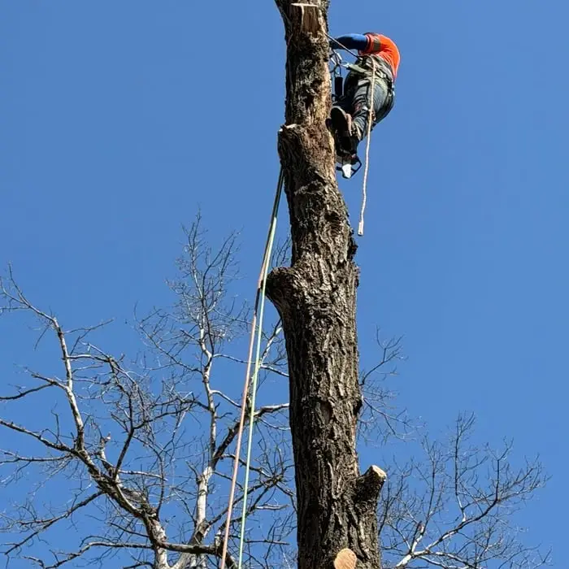

Tree Removal
Dead, leaning or unwanted trees taken down safely, with full cleanup.
Updated · By Blaine Tree Removals
Every tree is different, but the price always comes down to the same few things. Here is what affects the cost of tree removal in Blaine, and how to get your free quote.
No two trees are the same, so we don't publish set prices. A small ornamental in an open yard and a large cottonwood leaning over a garage are completely different jobs. Instead, we come out, look at your tree and give you a free written quote with no obligation. Call or text (651) 800-1205 to set up a visit.
Below are the things that affect what a tree job costs, so you know what to expect when we look at your property.
Height and trunk diameter are the biggest factors. A bigger tree means more cutting, more rigging, more wood to chip and haul, and more time.
A tree in an open backyard that can be felled in one piece is the cheapest kind of removal. A tree hanging over your house, garage, fence or a neighbor's yard has to be taken down in small pieces and lowered on ropes, which takes far longer.
Can our equipment get to the tree? Many Blaine backyards are fenced with standard gates. Trees reachable from the driveway cost less than trees that require carrying every branch across the yard by hand.
Dead and decayed trees, especially ash killed by emerald ash borer, can be unsafe to climb. They may need a lift or crane, which adds cost. Removing a failing tree early is usually cheaper than waiting.
Trees near lines require extra care, and sometimes the utility has to be involved first.

We'll come out, look at the tree and give you a free written quote with no obligation. Call or text (651) 800-1205 or request a quote online.
It depends on the size of the tree, what is around it, access for equipment and the tree's condition. We don't publish set prices because every job is different. Call (651) 800-1205 for a free, no-obligation on-site quote.
Often when a tree falls on a covered structure such as your house or garage. A tree that falls in the open yard usually is not covered. Check your policy.
Not usually. Stump grinding is quoted separately and can be done on the same visit.
Winter is often a good time to book because frozen ground protects your lawn and crews have more availability.
Call or text for a free, no-obligation quote. We serve homeowners all across Blaine, MN.